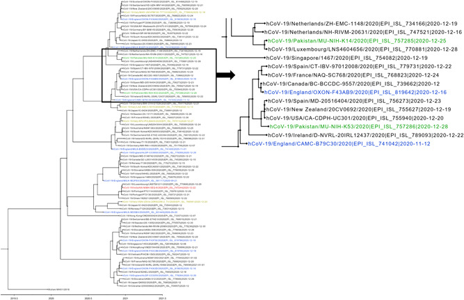

Importation of SARS-CoV-2 Variant B.1.1.7 in Pakistan
Massab Umair, Aamer Ikram, Muhammad Salman, Muhammad Masroor Alam, Nazish Badar, Zaira Rehman, Sana Tamim, Adnan Khurshid, Abdul Ahad, Hamza Ahmad, Samee Ullah,
Journal of Medical Virology (2021)
DOI: https://doi.org/10.1002/jmv.26869
Abstract
On December 14, 2020, a variant of SARS‐CoV‐2 characterized as VOC‐202012/01 (lineage B.1.1.7) emerged in the United Kingdom with rapid expansion to over 64 countries as of January 27, 2021. (https://www.gisaid.org/). Analysis of 17,782 whole‐genome sequences submitted to GISAID exhibited several mutations mainly in the spike (S) gene. During the current COVID‐19 pandemic, identification of novel lineages of SARS‐CoV‐2 and tracking their geographic spread are essential to guide public health interventions and travel advice. We hereby report the detection and genetic characterization of two imported cases of the B.1.1.7 variant in Pakistan.
The oropharyngeal swabs of travelers returning from United Kingdom were tested for the presence of SARS‐CoV‐2 through real‐time polymerase chain reaction (PCR) at the Department of Virology, National Institute of Health, Pakistan. Briefly, viral RNA was extracted using QIAamp Viral RNA Mini kit (Qiagen) according to manufacturer’s instructions. A two‐step strategy was used for the detection of the SARS‐CoV‐2 variant B.1.1.7 with initial screening by TaqPath™ RT‐PCR COVID‐19 kit (Thermo Fisher Scientific) followed by whole genome sequencing of spike gene target failure (SGTF) samples. The NEBNext Ultra II Directional RNA Library Prep kit for Illumina (NEW ENGLAND BioLabs Inc.) was used for library preparation according to manufacturer’s instructions and whole‐genome sequencing was performed on Illumina iSeq 100 instrument (Illumina). Sequence alignment and analysis was performed using Geneious prime software version 2020.1.2 (https://www.geneious.com/prime/).
Between December 28, 2020 and January 03, 2021, a total of 76 samples from travelers returning from the United Kingdom were received and tested among which 38 (50%) were found SARS‐CoV‐2 positive on real‐time PCR (showing amplification of all three targets, i.e., N gene, ORF1ab and the S gene) whereas 10 (26%) samples showed the SGTF. Only six SGTF samples having low Ct values of N gene (<25) were further subjected to next generation sequencing and two samples were successfully sequenced.
The two Pakistan strains MU‐NIH‐K14 and MU‐NIH‐K53 showed 99.9% nucleotide homology with the UK prototype variant (VOC‐202012/01). Phylogenetic analysis categorized Pakistani strains to B.1.1.7 lineage indicating two independent introductions that clustered with strains from Luxembourg, Spain, and United States, respectively (Figure 1). Overall, the two strains showed 19 missense mutations, 6 amino acid deletions, and 5 synonymous mutations (Table 1). Notably, we found the N501Y mutation in the receptor binding domain of spike protein known to escalate viral binding with angiotensin‐converting enzyme 2 receptor, increase transmissibility and enables the virus to escape class 1 antibodies.

Our sequences MU‐NIH‐K14 and MU‐NIH‐K53 also showed a spike protein P618H substitution reported as a key determinant for efficient SARS‐CoV‐2 transmission and deletion at amino acid 69–70 that has implications for diagnostic assays.
Whilst the full implication and functional significance of such variants is yet to be determined, these findings warrant to scale‐up the molecular surveillance system in Pakistan to enable early detection of emerging lineages and their clinical impact. As of to date, there is a single public health federal institute (NIH) resourced to characterize SARS‐CoV‐2 variants. The national authorities should proactively focus on expanding genomic surveillance of SARS‐CoV‐2 to fortify global containment efforts in identifying epidemiologically and clinically significant variants and track their transmission lineages for effective countermeasures.
Notably, Pakistan has yet to devise its vaccination strategy using an economical and community acceptable vaccine before the immunization kicks off in the country. Pakistan, since September 2020, is conducting a phase‐III clinical trial of a single‐dose anti‐COVID vaccine manufactured by a Chinese producer CanSino with 18,000 volunteers mainly in the Federal capital. Another phase‐I trial of a different Chinese vaccine SinoVac has been completed in district Karachi. With such encouraging decisions by the Government of Pakistan to boost the herd immunity and protection through vaccination preferably through a Chinese manufacturer, alarming news came out of a phase‐III trial of the Chinese Coronavac vaccine in Brazil with only 50% efficacy compared to western counterparts, that is, Moderna and Pfizer‐BioNTech with 95% efficacy. It is, therefore, critical to reconsider the selection of vaccine to win public acceptance at large in view of the chronic reluctance impeding polio eradication in the country for years.
Links
Published paper
Researchgate pdf
Citation
@article{ullah2021,
author = {Ullah, Samee},
title = {Importation of {SARS-CoV-2} {Variant} {B.1.1.7} in
{Pakistan}},
volume = {93},
number = {5},
date = {2021-02-11},
url = {https://onlinelibrary.wiley.com/doi/10.1002/jmv.26869},
doi = {10.1002/jmv.26869},
langid = {en}
}